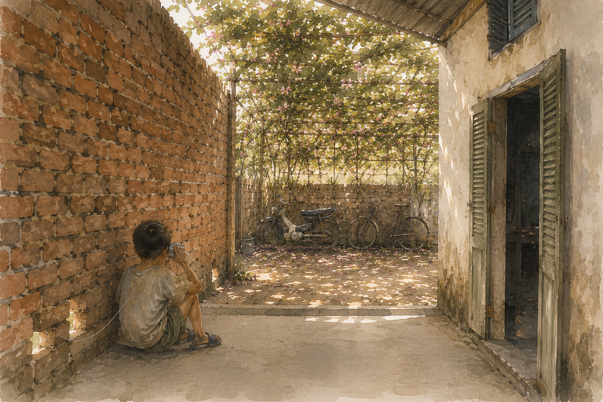
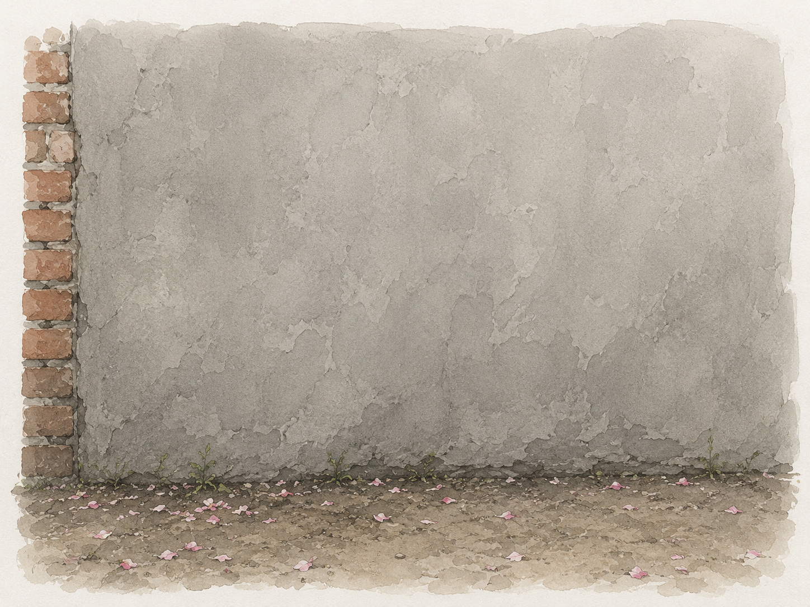

Nhà tớ với nhà cái Tâm chung một bức tường. Hai cái nhà nằm sát nhau, cái hiên nhà này đụng cái hiên nhà kia, người ta dựng một bức tường gạch chắn ngang chỗ giáp ranh. Tường cao lắm — cao hết cột nhà, cao tới mái, bịt kín một bên. Mà xây tạm thôi: không tô, không trát, gạch chồng lên gạch. Dưới thấp, chỗ gần sát nền, giữa mấy viên gạch còn chừa những cái lỗ bằng đúng con mắt.
Cái tường đó không giấu được gì hết. Tớ nghe bên đó cãi nhau chuyện ai rửa chén, nghe cái Tâm bị anh nó la, nghe tiếng dép lê kéo lệt xệt qua sân. Bên đó chắc cũng nghe hết bên này: tiếng máy may của mẹ chạy suốt buổi, rẹt một hồi rồi ngưng, rồi rẹt tiếp; tiếng tivi; tiếng tớ dạ mẹ.
Ba mẹ hai đứa nó đi làm suốt. Sáng khóa cái cổng sắt lại, chiều mới về mở. Hai anh em ở trong đó một mình, tự bảo ban nhau.
Còn tớ thì được ra sân. Đi từ ngoài hẻm vô là qua cái cổng sắt, rồi tới sân, rồi tới hiên, rồi mới vô nhà — nhà tớ thụt sâu tuốt trong, ngoài mặt tiền là mấy phòng cho thuê. Sân có giàn tigon phủ rợp, che gần hết nắng, dưới đó dựng cái xe đạp của mẹ với cái xe máy của ba. Nhưng chỉ được ra sân thôi — sáng thì tớ ở trỏng, quanh quẩn với mẹ, phải tới chiều mẹ mới mở cổng cho tót ra ngoài hẻm. Nên buổi sáng tớ đá banh một mình trong sân, ngày này qua ngày khác, đá vô tường rồi banh dội lại, đá tiếp.
Một bữa đang đá, tớ nghe bên kia gọi qua:
“Ê. Đằng ấy ơi.”
Tớ đứng im. Tưởng nghe lộn.
“Nghe hông.”
Tớ đi lại chỗ bức tường, ngồi thụp xuống, ghé mắt vô một cái lỗ gạch. Bên kia có một con mắt đang ghé vô cái lỗ đó nhìn qua. Một con mắt, với một mảng má, với một chút tóc. Có cái kẹp trên mái tóc.
“Nghe.”
Bữa đó tớ chưa biết nó tên gì, nó cũng chưa biết tớ tên gì, mà không đứa nào hỏi. Cứ ngồi chồm hổm hai bên tường hét qua hét lại. Sau này tớ mới biết hồi đó nó cũng có nghe tớ dạ mẹ suốt — nó nói nó biết nhà bên này có một thằng, nghe tiếng banh đập vô tường hoài, mà chả bao giờ thấy mặt.
Rồi tớ coi tivi, thấy người ta lấy hai cái lon sữa bò, đục lỗ dưới đáy, xỏ một sợi dây xuyên qua, cột nút lại. Căng sợi dây ra. Một đứa nói vô lon này, đứa kia áp lon kia vô tai, nghe được. Tớ ghé cái lỗ gạch, chỉ nó làm.
“Mày kiếm cái lon sữa đặc. Cái rỗng đó. Rửa cho sạch.”
“Nhà tao đâu có.”
“Thì chờ. Chừng nào có thì nói.”
Rồi tớ chờ. Mấy bữa sau bên đó vẫn chưa có lon — nhà nó hai anh em ở nhà một mình, mẹ để lại cơm, làm gì có ai pha sữa đặc mà có lon rỗng. Bữa nào tớ ghé lỗ gạch hỏi, nó cũng nói chưa. Tớ thì có sẵn một cái rồi, để dành, đặt ở góc sân, chờ.
Chắc cũng phải bốn năm bữa. Rồi một buổi sáng tớ nghe bên kia ới qua, giọng hớn hở:
“Có rồi nè!”
“Đâu ra vậy?”
“Anh Hai tao kiếm.”
“Rồi. Lấy đinh đục cái lỗ dưới đáy. Nhỏ thôi, vừa sợi dây.”
Bên kia im. Rồi nghe tiếng lục đục. Rồi tiếng cạch cạch cạch — nó đang gõ đinh.
Cái đi qua bức tường không phải cái lon. Cái lỗ gạch chỉ vừa con mắt, nhét cái gì qua cũng không lọt; chỉ có sợi dây là chui qua được. Tớ luồn dây qua lỗ, bên kia nó chờ sẵn, kéo đầu dây ra, xỏ vô lon của nó, cột nút. Đầu này tớ cũng cột. Rồi hai đứa lùi ra hai bên, kéo cho sợi dây căng. Chắc phải mất cả một buổi sáng mới xong, vì dây cứ chùng, mà dây chùng thì không nghe được gì hết — phải căng, mà căng quá thì nút nó tuột.
Từ hôm đó nhà tớ có điện thoại.
Cái lon xài kiểu này: một đứa nói vô miệng lon, đứa kia áp lon vô tai. Nói xong thì đổi. Đứa nói thì không nghe, đứa nghe thì không nói, cứ vậy mà thay phiên. Nói nhỏ được. Không phải hét.
Cách gọi thì như vầy. Bên đó, cái Tâm chờ nghe có tiếng tớ trong sân thì nó mới ới. Ới mà tớ không nghe — tớ đang trong nhà, đang coi tivi, đang bị mẹ sai đi cái gì đó — thì nó cứ ới hoài, ới tới lúc mẹ tớ nghe. Mẹ tớ đang ngồi máy may, ngừng đạp, ngó ra sân, rồi kêu:
“Thiện ơi! Có điện thoại!”
Cả xóm này, ai có chuyện gấp thì phải chạy qua nhà anh Môn gọi nhờ. Cái điện thoại bàn duy nhất trong xóm nằm ở đó. Còn tớ có điện thoại riêng.
Mẹ tớ không cấm. Mẹ tớ thấy buồn cười. Có bữa mẹ vừa quét sân vừa càu nhàu, cái giàn tigon rợp cả sân, hoa rụng đầy, quét hoài không hết, quét xong một chốc là nó rụng tiếp — vậy mà tới hồi nghe bên kia ới, mẹ vẫn dựng cây chổi lại, ngó ra sân, gọi tớ.
Có điện thoại.
Tớ ngồi bệt xuống hiên, chỗ góc trái, dựa lưng vô bức tường gạch. Ngoài sân, cách đó có mấy bước, là cái xe máy của ba. Bên kia nó kể: nay mẹ nó để lại cơm với trứng chiên, nay nó bị mẹ la vì cái gì đó, nay cô cho bài toán, nó làm không ra.
Tớ nói mày đọc đề tao nghe coi. Nó đọc, tớ giải. Tớ nói vô lon từng bước một, nói chậm, có chỗ phải nói lại hai ba lần vì cái lon nghe rè. Rồi tớ áp lon vô tai. Bên kia im một hồi lâu, chỉ nghe tiếng sột soạt.
“Ê. Chép chưa?”
“Chép rồi. Nói tiếp đi.”
Cái Tâm học hơi dở. Nhưng nó chép. Nó chép hết, không sót chữ nào.
Tớ kể cho nó nghe về anh Môn, cái ông ngồi vắt vẻo trên cây trứng cá cuối xóm. Kể về cái Huyền, con nhỏ chống nạnh ngó người ta từ đầu tới chân. Kể vụ bộ cá ngựa, vụ cái cát-xét cũ.
Bên kia im lâu. Rồi nó nói, giọng nhỏ hẳn xuống:
“Tao biết con Huyền.”
“Ủa. Sao mày không qua chơi?”
“Tao hổng dám.”
Tớ áp lon vô tai. Nghe tiếng sột soạt, chắc nó đang gãi gãi cái gì đó.
“Bữa bế giảng, tao với nó hẹn đi chung. Tao ngủ quên. Nó chờ tao ngoài cổng lâu lắm. Rồi nó quạu.”
“Quạu sao?”
“Nó hổng nói gì hết. Nó bỏ đi. Từ bữa đó tới giờ.”
Tớ ngồi im. Hóa ra cái Tâm dọn tới xóm này trước tớ ba tháng. Ba tháng, mà nó chỉ biết mặt người ta chứ chưa thân với ai. Ba tháng ngồi trong cái nhà khóa cổng đó. Còn tớ mới tới, có mấy bữa mà đã có anh Môn, có cái Huyền, có thằng Cò.
“Ê.”
“Gì.”
“Con Huyền nó cũng được mà. Nó hổng có dữ đâu.”
Bên kia không trả lời.
Tớ nói tiếp vô cái lon, nói cái gì cũng được, kể vụ con ngựa gãy cổ, kể cái mặt thằng Cò lúc nó ôm cái hộp xúc xắc. Tớ nói một hồi lâu. Rồi tớ áp lon vô tai.
Không có gì hết. Chỉ có tiếng rè.
Rồi tớ nghe thấy mùi cỏ. Bánh xe máy của ba còn dính cỏ. Ngồi ở hiên, tớ ngửi thấy mùi dầu nhớt bay vô, rồi mùi cỏ tươi lẫn theo, xanh xanh, dễ chịu.
Tớ nhớ cái mùi đó tới giờ.

Anh Hoàng không bao giờ cầm cái lon. Ảnh biết, ảnh có nghe — sáng nào tớ với cái Tâm cũng ngồi bệt hai bên tường cả buổi, ngay sát cái hiên nhà nó, ảnh ở trong đó thì làm sao mà không nghe.
Mà cái ảnh nghe được, chắc chỉ có tiếng cười. Tụi tớ nói nhỏ vô lon, áp tai vô lon; ngoài cái lon ra thì không ai nghe được chữ nào. Cái Tâm ngồi sát tường, thi thoảng cười khúc khích một mình. Còn ảnh thì ở trỏng, làm chuyện của ảnh.
Hồi đó tớ nghĩ chắc ảnh chê trò này con nít.
Đường dây đó xài được bao lâu, tớ không nhớ. Tớ chỉ nhớ tới lúc cái Tâm chịu bước qua cái miếng đất trống đó — chuyện đó là chuyện khác, dài lắm, để bữa nào tớ kể — thì tự nhiên cái lon nằm đó. Không ai bỏ nó. Không ai nói thôi không xài nữa. Chỉ là hết cần. Muốn nói gì thì chạy ra ngoài nói, mặt đối mặt, nhanh hơn, mà lại không rè.
Trẻ con mà. Cả thèm chóng chán.

Rồi một bữa người ta trát xi măng lên bức tường đó. Trát cho kín, cho khỏi mưa dột, cho ra cái tường tử tế. Mấy cái lỗ gạch bị bít lại hết. Tớ đứng coi người ta trát — tớ nhớ tớ đứng coi, mà tớ không nhớ tớ có buồn không. Cái đường dây đó chết trước bữa đó lâu rồi. Xi măng chỉ tới sau, trát lên một cái đã hỏng.
Cái tớ không nhớ nổi, tới giờ vẫn không nhớ nổi, là bữa cuối cùng tớ ra cầm cái lon đó là bữa nào. Tớ không biết bữa đó tớ nói gì, không biết cái Tâm nói gì, không biết tớ có ừ hử qua loa rồi bỏ vô nhà coi tivi không.
Chắc là có.
Chắc là hôm đó tớ để cái lon xuống, y như mọi bữa, tính bụng mai ra cầm tiếp.